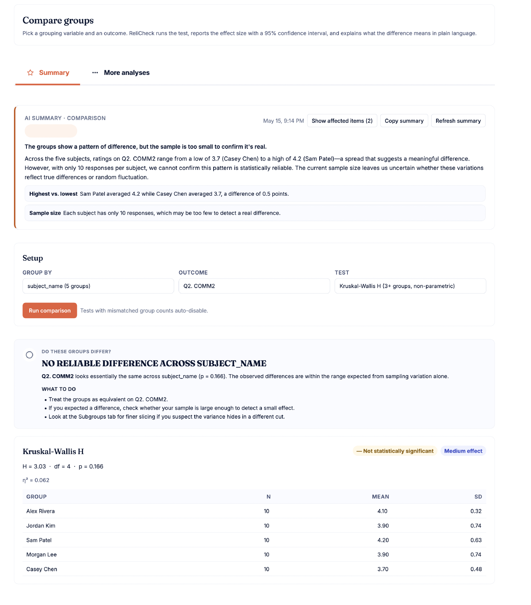

Weak questions become strong conclusions
Leaders overinterpret averages from poorly constructed items. An engagement score of 4.2 means fundamentally different things depending on whether the items behind it are measuring what they claim to measure.
HR teams are increasingly expected to make decisions from engagement, climate, onboarding, exit, and 360 surveys. But weak questions, unstable scales, low subgroup counts, and overinterpreted results can turn employee feedback into organizational risk.
Most HR teams discover these problems only after a chart is in a leadership deck. By then, the conversation has already moved on from whether the number is real to what to do about it.
Leaders overinterpret averages from poorly constructed items. An engagement score of 4.2 means fundamentally different things depending on whether the items behind it are measuring what they claim to measure.
Departments with only a few employees can accidentally become identifiable when subgroup breakdowns hit a leadership report. Once one employee can be located in the data, trust in the process erodes.
Changes from quarter to quarter may reflect unstable measurement instead of real organizational change. Without reliability checks, a five-point lift can be measurement drift dressed up as progress.
When surveys feel unclear, poorly worded, or misused, participation quality declines. Response rates fall, open-ended answers shrink, and the dataset stops being usable for the decisions it was meant to support.
None of these are extra steps for HR to remember. They run automatically inside the platform, and surface in the dashboard at the point where the team is about to act on the results.
The Survey Strength Index runs across six weighted domains and returns a 0 to 100 score with a plain-language readout. HR can see the result before anyone else does.
Subgroups below the privacy floor are hidden entirely, not just masked. A department of three never lands in a leadership report by accident.
The flags surface in the dashboard so HR sees the cautions before the deck goes to the board, with concrete suggestions for what to revise next cycle.
A four-tier readout ("Can I use these results?") tells you whether the data is strong enough for the decision you want to make, and what to caveat if it is not.
Employee surveys only work when employees believe the process is fair.
Engagement scales, 360 panels, subgroup-protected analytics, and the analyses CHRO and CFO audiences actually request, on the same dashboard as the reliability checks.
Reverse-scoring built in, optional pulse cadence, validated item banks. Run quarterly without re-validating the instrument each time. K-anonymity protections sit underneath every rollup.
Structured 30, 60, and 90 day onboarding check-ins. Validated exit items with theme extraction across open responses. Stay interview prompts that get honest answers before the recruiter call.
Self, peer, direct-report, and manager raters per subject. Per-subject AI summary card. One-click PDF for each subject's manager. Completion tracking by rater group, blind-spot flags when self overrates others.
Per-group composites, statistically tested differences, and a single composite Equity Gap Score. The narrator frames findings as patterns to understand, never accusations. Small groups are hidden entirely, so a department of three never appears in a chart.
Rank the survey factors most connected to engagement, belonging, or intent to stay. See which conditions change the relationship (tenure, role, location), so the recommendation matches the people it applies to.
When the same engagement question lands differently across teams, regions, or managers, ReliCheck untangles whether the variation is real organizational signal or just how the data was grouped. Advanced modeling is available when the analysis calls for that depth.
Every analysis ReliCheck runs produces an artifact HR can defend, share, or send. The math sits underneath; the narrative sits on top.
A quarterly engagement pulse, scored end to end. This survey is statistically strong and ready for leadership review, with two items recommended for revision before the next cycle.

Per-department engagement, climate, and belonging composites with k-anonymity-protected rollups. Share via read-only link, password, or expiring URL.
One per subject. Self vs. others comparison, completion by rater group, top and bottom items, open-ended comments tagged by relationship, AI summary card. One-click PDF.
Two-to-three paragraph summary written from the live analytics snapshot in HR voice. Frames findings as patterns to understand, never accusations, with cautions where the data does not support the read.
Raw data, scored composites, item-level analyses, and methods-language exports for HR analytics teams, external researchers, or attorneys reviewing the dataset.
Whether you have engagement data already, want to build something new, want to run a 360, or want to see the deliverable first, there is a door for that.
Upload results from Qualtrics, SurveyMonkey, Google Forms, or any CSV. See whether the evidence is strong enough to present.
Path 02Start from a validated engagement, climate, onboarding, exit, or stay template. AI support drafts items; ReliCheck checks readiness before you send.
Path 03Self, peer, direct-report, and manager raters per subject. Plain-language per-subject reports, completion tracking by rater group, one-click PDF for each subject's manager.
Path 04Preview the kind of analysis and recommendations ReliCheck produces on a real quarterly engagement pulse, end to end.
Start free, upload an engagement result you already have, or open the HR sample report and see the deliverable first.